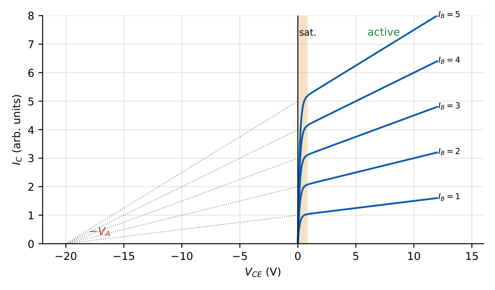

Bipolar Junction Transistors: Operation, Models and Characteristics
In this chapter
Operating regions, \(\alpha\)–\(\beta\) relations, leakage currents (\(I_{CBO}\), \(I_{CEO}\)), current components and efficiency factors, Ebers–Moll equations and the Early effect.
6.1 Structure and operating regions
A BJT has two junctions: emitter–base (EBJ) and collector–base (CBJ). The emitter is heavily doped, the base thin and lightly doped, the collector moderately doped and large.
| Region | EBJ | CBJ |
|---|---|---|
| Cutoff | reverse | reverse |
| Forward active (amplifier) | forward | reverse |
| Saturation (closed switch) | forward | forward |
| Inverse active (poor \(\beta\)) | reverse | forward |
In the forward-active npn transistor electrons injected from the emitter diffuse across the thin base; most are swept into the collector by the CBJ field, a few recombine in the base, and a small hole current flows from base to emitter.

\(I_E=I_C+I_B\). \(I_C=\alpha I_E+I_{CBO}\), \(\quad I_C=\beta I_B+I_{CEO}\).
\(\alpha=\dfrac{\beta}{\beta+1},\qquad \beta=\dfrac{\alpha}{1-\alpha}\); \(\alpha=0.99\Leftrightarrow\beta=99\); \(\ \beta=100\Leftrightarrow\alpha=0.990\).
Leakage: \(I_{CEO}=(\beta+1)I_{CBO}\). \(I_E=(\beta+1)I_B\) when leakage is neglected.
Saturation: \(I_C<\beta I_B\); the forced \(\beta_{forced}=I_C/I_B<\beta\). \(V_{CE(sat)}\approx0.1\)–\(0.3\) V, \(V_{BE}\approx0.7\) V.
6.2 Current components and efficiency
\(\alpha=\gamma\,\alpha_T\,M\) with emitter injection efficiency \(\gamma=\dfrac{I_{En}}{I_{En}+I_{Ep}}\approx\left[1+\dfrac{D_pN_{AB}W_B}{D_nN_{DE}L_p}\right]^{-1}\) (high emitter doping \(\Rightarrow\gamma\to1\)), base transport factor \(\alpha_T=1-\dfrac{W_B^2}{2L_n^2}\) (thin base \(\Rightarrow\alpha_T\to1\)) and collector multiplication \(M\approx1\).
Hence \(\beta\approx\dfrac{2L_n^2}{W_B^2}\) for \(\gamma\approx1\), or \(\beta\approx\dfrac{D_nN_{DE}L_p}{D_pN_{AB}W_B}\) if limited by emitter efficiency.
\(W_B=0.5\,\mu\)m, \(L_n=20\,\mu\)m: \(\alpha_T=1-\dfrac{(0.5)^2}{2(20)^2}=0.99969\). A thinner base or larger \(L_n\) raises \(\beta\).
6.3 Ebers–Moll model
The transistor is two back-to-back diodes plus coupled current sources.
\(I_E=I_{ES}\left(e^{V_{BE}/V_T}-1\right)-\alpha_RI_{CS}\left(e^{V_{BC}/V_T}-1\right)\)
\(I_C=\alpha_FI_{ES}\left(e^{V_{BE}/V_T}-1\right)-I_{CS}\left(e^{V_{BC}/V_T}-1\right)\)
Reciprocity: \(\alpha_FI_{ES}=\alpha_RI_{CS}=I_S\).
Forward active (\(V_{BE}\gg V_T\), \(V_{BC}<0\)): \(\ I_C=I_Se^{V_{BE}/V_T}\), \(\ I_B=I_C/\beta\).
Transport (Gummel–Poon) form: \(I_C=I_S\left(e^{V_{BE}/V_T}-e^{V_{BC}/V_T}\right)\).
\(I_S=10^{-15}\) A: at \(V_{BE}=0.7\) V, \(I_C=10^{-15}e^{0.7/0.0259}=0.547\) mA. For \(I_C=1\) mA, \(V_{BE}=0.0259\ln(10^{12})=0.716\) V. A factor-of-10 increase in \(I_C\) needs \(59.5\) mV more \(V_{BE}\).
6.4 Early effect (base-width modulation)
As \(V_{CB}\) increases the CBJ depletion region widens into the base, shrinking the neutral base width \(W_B\) and raising the collector current slightly.
\(I_C=I_Se^{V_{BE}/V_T}\left(1+\dfrac{V_{CE}}{V_A}\right)\); output resistance \(r_o=\dfrac{V_A+V_{CE}}{I_C}\approx\dfrac{V_A}{I_C}\).
\(V_A\) (Early voltage, 50–200 V): the point where the extrapolated output curves meet the \(V_{CE}\) axis at \(-V_A\). Larger \(V_A\) means higher \(r_o\). \(\beta\) also rises with \(V_{CE}\).
\(I_C=1\,\)mA at \(V_{CE}=2\) V with \(V_A=100\) V: at \(V_{CE}=7\) V, \(I_C=1\times\dfrac{1.07}{1.02}=1.049\) mA. \(r_o=100\,\)V\(/1\) mA \(=100\,\)k\(\Omega\).
6.5 Other effects
- Temperature: \(V_{BE}\) at fixed \(I_C\) falls \(\approx2\) mV/\({}^\circ\)C; \(I_{CBO}\) doubles per \(\sim10^\circ\)C; \(\beta\) rises with \(T\). Together they cause thermal runaway unless the bias is stabilised.
- Breakdown: \(BV_{CEO}<BV_{CBO}\) (\(BV_{CEO}\approx BV_{CBO}/\beta^{1/n}\), \(n\approx3\)–\(6\)). Punch-through: the CBJ depletion region reaches the EBJ.
- High-level injection: \(\beta\) falls at large \(I_C\). At very low \(I_C\) recombination in the EBJ also lowers \(\beta\).
- Frequency: transit time \(\tau_F=W_B^2/2D_n\) and junction capacitances give \(f_T=g_m/[2\pi(C_\pi+C_\mu)]\) (Ch. 7).
- Inverse mode: swapping E and C gives \(\beta_R\ll\beta_F\) (collector lightly doped).
(i) The relation \(\beta=I_C/I_B\) holds only in the active region; in saturation \(I_C/I_B<\beta\). (ii) \(I_{CEO}\) is not \(I_{CBO}\): it is \((\beta+1)\) times larger. (iii) \(V_{BE}\) is nearly constant (\(\approx0.7\) V) but falls with temperature. (iv) The Early effect increases \(I_C\) with \(V_{CE}\) in the active region; in saturation \(I_C\) falls steeply. (v) \(\alpha<1\) always.
Active-region analysis: assume \(V_{BE}=0.7\), find \(I_B\), \(I_C=\beta I_B\), then check \(V_{CE}>0.2\) V; if not, the transistor is saturated and \(I_C=(V_{CC}-V_{CE(sat)})/R_C\). \(g_m=I_C/V_T\) (\(38.6\) mS per mA).
6.6 GATE problems
Q1. A BJT with \(\beta=100\) has \(\alpha=\) (A) 0.99 (B) 0.90 (C) 1.01 (D) 0.9999.
Q2. In the forward active region the junctions are (A) EBJ forward, CBJ reverse (B) both forward (C) both reverse (D) EBJ reverse, CBJ forward.
Q3. Increase of \(I_C\) with \(V_{CE}\) in the active region is due to (A) Zener effect (B) Early effect (C) punch-through (D) Miller effect.
Q4. \(I_{CEO}\) equals (A) \(I_{CBO}\) (B) \((\beta+1)I_{CBO}\) (C) \(\beta I_{CBO}\) (D) \(I_{CBO}/\beta\).
Answers: Q1 (A): \(100/101=0.990\). Q2 (A). Q3 (B). Q4 (B).
Q5. \(\beta=100\), \(I_B=20\,\mu\)A, \(I_{CBO}\) negligible. \(I_C\) and \(I_E\) are (A) 2 mA, 2.02 mA (B) 2 mA, 1.98 mA (C) 20 mA, 20.2 mA (D) 0.2 mA, 0.22 mA.
Q6. \(I_C=1\) mA at \(V_{CE}=2\) V and \(V_A=100\) V. At \(V_{CE}=7\) V the collector current is (A) 1.00 mA (B) 1.05 mA (C) 1.07 mA (D) 1.25 mA.
Q7. A BJT has \(I_S=10^{-15}\) A. The \(V_{BE}\) for \(I_C=1\) mA (\(V_T=25.9\) mV) is (A) 0.60 V (B) 0.72 V (C) 0.80 V (D) 0.90 V.
Answers: Q5 (A): \(I_E=2.02\) mA. Q6 (B): \(1.07/1.02\). Q7 (B): \(0.716\) V.
Q8. \(I_{CBO}=1\) nA, \(\beta=100\). \(I_{CEO}\) (nA): .
Q9. Change of \(V_{BE}\) (mV) at constant \(I_C\) when temperature rises from \(27^\circ\)C to \(127^\circ\)C (use \(-2\) mV/\({}^\circ\)C): .
Q10. Output resistance (k\(\Omega\)) for \(V_A=100\) V and \(I_C=1\) mA (ignore \(V_{CE}\)): .
Answers: Q8: 101. Q9: \(-200\). Q10: 100.
Q11. Choose the true statements. (A) \(\alpha<1\). (B) Saturation has both junctions forward. (C) \(BV_{CEO}>BV_{CBO}\). (D) Early effect increases output conductance.
Answers: Q11: (A), (B), (D).
T1. \(\alpha\) for \(\beta=50\). T2. Base-width modulation is called? T3. Reciprocity relation of E–M model.
Answers: T1: \(0.980\). T2: Early effect. T3: \(\alpha_FI_{ES}=\alpha_RI_{CS}=I_S\).
- Active: EBJ forward, CBJ reverse; \(I_C=\beta I_B\), \(I_E=(\beta+1)I_B\), \(\alpha=\beta/(\beta+1)\), \(I_{CEO}=(\beta+1)I_{CBO}\).
- \(\alpha=\gamma\alpha_T\); thin base, heavy emitter \(\Rightarrow\) high \(\beta\).
- \(I_C=I_Se^{V_{BE}/V_T}(1+V_{CE}/V_A)\); \(r_o=V_A/I_C\); \(-2\) mV/\({}^\circ\)C.